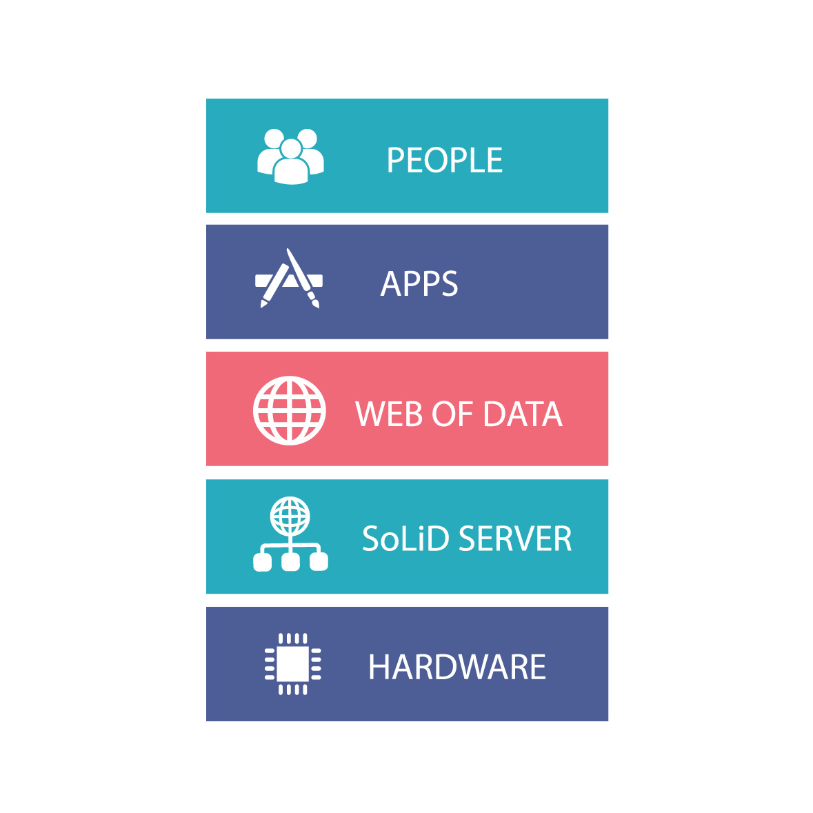

The world is confronting increasingly complex and interrelated issues that can
only be solved by real-time secure cooperation between autonomous actors.
Co-operating Systems CIC researches, develops, maintains and provides services around an open source/open standards software platform to enable this.
CO-OPERATING SYSTEMS

THE PROBLEM
As people use more and more web apps they are confronted with fragmentation at every level of their experience. Every site requires a new login. User Interfaces are different for each site, even when two sites provide the same service. Data from one site can only with great difficulty be used by another. Developer APIs are different everywhere, making the cost of cooperation explode.
Trying to force a solution through centralisation harms the autonomy of each actor and is doomed to fail in a spherical world that can have no center.

OUR OBJECTIVE
We want a web where we can use applications tailor made for each of us. These applications will work like browsers, seamlessly across organisational boundaries by following linked data. This way we can choose where to host our resources, what protections each requires, what app suits us and our needs, and use as few as possible identities across the whole web. This will enable us to link actors across organisations into a global secure social web, allow us to develop ideas, transform them into projects and share resources to solve the transversal problems of the 21st century.

THE PLATFORM
The techno/social stack we are implementing consists of Open Source Human Interface Libraries that can read from anywhere on the web, follow linked data and write to Social Linked Data servers (SoLiD) setting access control rules as required. As a result designers will be able to write Apps providing a consistent user interface for people needing to co-operate within and across organisations.